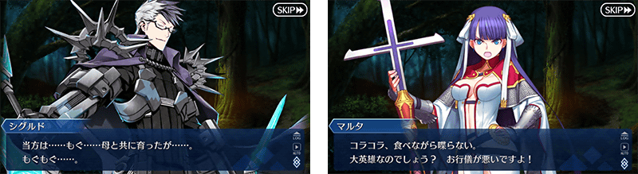
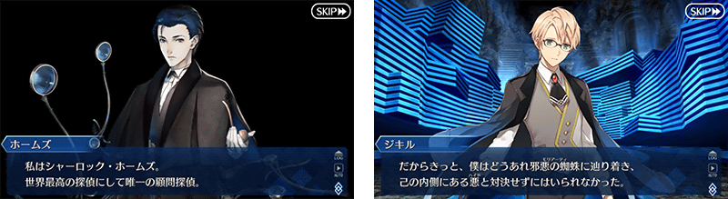
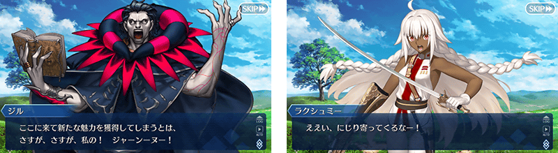
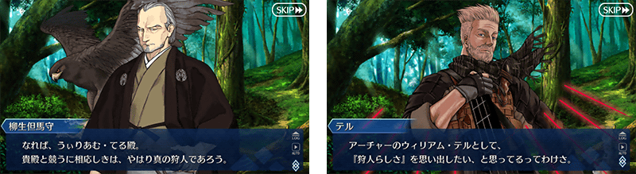
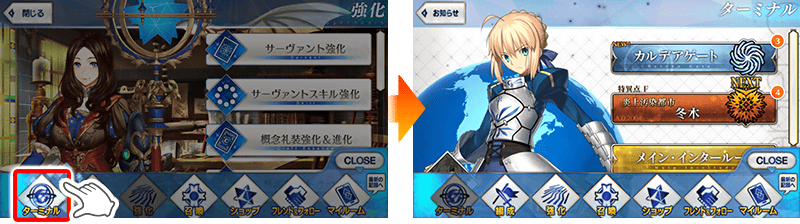
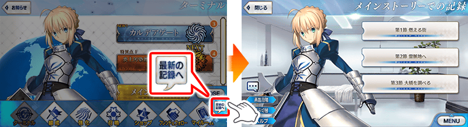
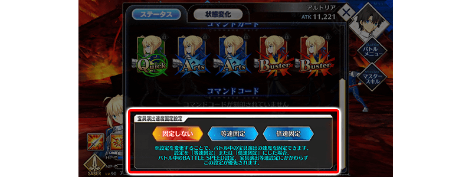
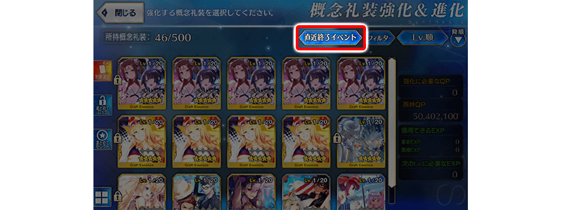
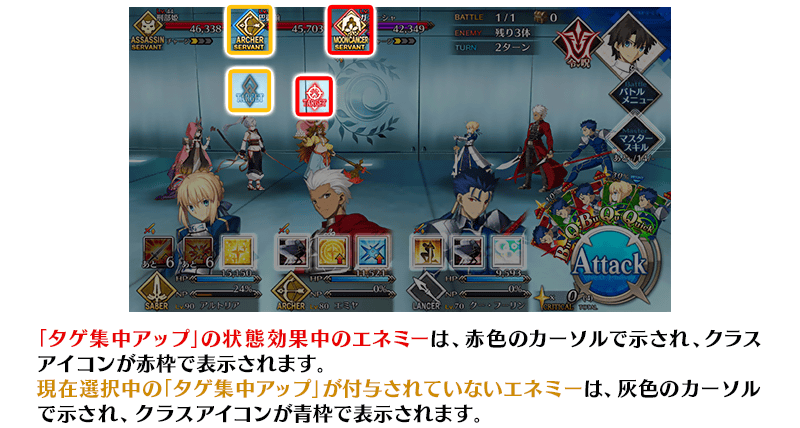

以期間限定舉辦「幕間物語宣傳活動 第13彈」。
宣傳活動舉辦中特別登入獎勵的實施以外，開放新幕間物語的6位的從者強化大成功・極大成功率2倍！
並且特定主線關卡的消耗AP1/2或1/4、所有從者的幕間物語消耗AP變成1/2！
※本頁面皆為開發中圖片。會有與實際圖片相異的情況。
◆舉辦期間◆
2020年6月29日(一) 17:00～7月8日(三) 11:59
◆有關從者真名的注意◆
在2018年12月31日(二) 23:00以後新配信的主線故事及期間限定活動、一部份關卡、宣傳活動及召喚中，會顯示隱藏真名的對象從者真名。
※2018年12月31日(一) 22:59前已經配信的主線故事、復刻活動、一部份關卡中不在此限。

◆開放時間◆ 2020年6月29日(一) 17:00～
◆對象從者◆ ・西格魯德 ・司馬懿〔萊涅絲〕 ・始皇帝 ・夏洛克・福爾摩斯 ・拉克什米・芭伊 ・威廉・泰爾

|
◆關卡開放條件◆ ◆關卡通過報酬◆ |

|

|
◆關卡開放條件◆ ◆關卡通過報酬◆ |
|
◆關卡開放條件◆ ◆關卡通過報酬◆ |

|
◆關卡開放條件◆ ◆關卡通過報酬◆ |

|
◆關卡開放條件◆ ◆關卡通過報酬◆ |

|
◆關卡開放條件◆ ◆關卡通過報酬◆ |

為了記念「幕間物語宣傳活動 第13彈」的舉辦，實施特別登入獎勵。
在下述期間中合計7天內登入(1天算1次)的話，贈送最多黃金果實4個與聖晶石3個！
◆舉辦期間◆
2020年6月30日(二) 3:00～7月7日(二) 2:59
※在舉辦期間內合計7天內登入的話，可領取所有的登入獎勵。
◆贈送對象◆
2020年7月6日(一) 2:59前通過「特異點F 炎上汙染都市 冬木」的御主對象
※上述時間前，在管理室(ターミナル)畫面的關卡橫幅必須要有「CLEAR」的文字顯示。
| 登入次數 | 贈送內容 | |
|---|---|---|
| 第1次 |

|
黃金果實 1個 |
| 第2次 |
|
黃金果實 1個 |
| 第3次 |

|
聖晶石 1個 |
| 第4次 |
|
黃金果實 1個 |
| 第5次 |
|
聖晶石 1個 |
| 第6次 |
|
黃金果實 1個 |
| 第7次 |
|
聖晶石 1個 |
※登入獎勵會在每天3:00配發。 ※合計7天內能領取，但根據成為贈送對象的時間點，可能無法到此上限。

下述的期間中，本次開放新幕間物語的6位從者在進行時強化時，大成功(經驗值2倍加成)・極大成功(經驗值3倍加成)的發生率以期間限定變成2倍！
請務必藉此機會強化對象從者吧！
◆舉辦期間◆
2020年6月29日(一) 17:00～7月8日(三) 11:59
◆對象從者◆
| 職階 | 稀有度 | 從者名 |
|---|---|---|
| Saber | ★★★★★ | 西格魯德 |
| ★★★★ | 拉克什米・芭伊 | |
| Archer | ★★★ | 威廉・泰爾 |
| Rider | ★★★★★ | 司馬懿〔萊涅絲〕 |
| Ruler | ★★★★★ | 始皇帝 |
| ★★★★★ | 夏洛克・福爾摩斯 |
下述的期間中，主線關卡第2部 第3章為止的消耗AP變成1/4！(就算在戰鬥中撤退的情況也會是同様的消耗量)
尚未通過主線關卡的御主，請務必活用此機會！
◆舉辦期間◆
2020年6月29日(一) 17:00～7月8日(三) 11:59
◆對象關卡◆
主線關卡第1部(從特異點F到終局特異點)
主線關卡第2部(從第1章到第3章)
※在主線關卡第2部 第3章以前的AP消耗量是永久變成1/2的狀態。因此，宣傳活動結束後，該主線關卡的AP消耗量會變成1/2。 ※請注意亞種特異點(從Ⅰ到Ⅳ)、自由關卡為對象外。
下述的期間中，主線關卡第2部 第4章的消耗AP變成1/2！(就算在戰鬥中撤退的情況也會是同様的消耗量)
尚未通過主線關卡的御主，請務必活用此機會！
◆舉辦期間◆
2020年6月29日(一) 17:00～7月8日(三) 11:59
◆對象關卡◆
主線關卡第2部(第4章)
※請注意自由關卡為對象外。

下述的期間中，所有從者的幕間物語消耗AP變成1/2！(就算在戰鬥中撤退的情況也會是同様的消耗量)
藉此機會滿足開放條件，通過喜愛從者的物語吧！
◆舉辦期間◆
2020年6月29日(一) 17:00～7月8日(三) 11:59
◆對象關卡◆
所有的幕間物語
※也包含自2020年6月29日(一) 17:00開放的幕間物語。
介紹在2020年6月29日(一)的維修後反映的更新內容之中代表性的內容。
◆追加時間◆
2020年6月29日(一) 17:00
在「MENU」追加各種捷徑鍵
・追加至管理室(ターミナル)畫面的捷徑功能
將在「MENU」追加「管理室(ターミナル)」鍵。
變得可從各個畫面立即移動至管理室(ターミナル)畫面。

・追加至最新劇情的捷徑功能
將在「MENU」追加「至最新的記錄」鍵。
變得可從各個畫面直接移動至圖鑑(マテリアル)內的最新劇情。
因此，變得更容易閱讀之前的劇情。

在戰鬥中追加確認、變更寶具演出速度的固定設定功能
在戰鬥中的從者詳細情報，變得能進行確認、變更寶具演出速度的固定設定。

在概念禮裝強化＆進化畫面追加概念禮裝用活動加成篩選器「剛結束活動」
為了更容易進行強化和進化已結束活動的概念禮裝，在概念禮裝強化＆進化畫面追加活動加成篩選器「剛結束活動」。

對敵人賦予「目標集中提升」狀態效果時的UI修改
戰鬥中，對敵人賦予「目標集中提升」狀態效果時，無法選擇目標的動作，修改成可選擇目標。
※但是就算變更目標的情況，一如既往會以「目標集中提升」對象敵人做為優先對象。 ※如「目標集中提升〔男性〕」效果限定影響對手的情況，非對象的我方才能選擇目標對象。 ※有多個賦予「目標集中提升」敵人的情況，會變得與我方側情況同様從多個敵人之中隨機選擇對象。

其他還有，期間限定「幕間物語宣傳活動第13彈Pick Up召喚(每日交替)」同時舉辦！
關於詳情，請自下述橫幅確認。
■「幕間物語宣傳活動第13彈Pick Up召喚(每日交替)」詳細情報